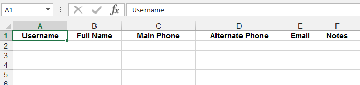

2. Setting up a Mission¶
Every instance of an ELMO database allows administrators to organize field projects into areas called missions. For example, if you have a project going on in two different countries, with different reporters or observers, you may want to have two different missions: Country 1 and Country 2.
2.1. Create a Mission (Admin only)¶
Only administrators are able to work in ELMO in Mission Mode or Admin Mode with an overall view of all missions; everyone else must be assigned to a unique Mission. To create a mission, the Admin Mode must be activated. To activate Admin Mode, click the Admin Mode menu located in the top right corner of the screen. To create a mission:
Click the Missions menu located on the main menu bar at the top of the Admin Mode page
Once on the Missions page, click the orange Create Mission link
Enter a name for the mission: use only letters, numbers, and spaces
- Mission names usually include the country name and the year (i.e. Kenya 2013)
- Administrators have the option to lock a mission. When a mission is locked, Responses and Forms cannot be created or edited, and users cannot be added or deleted. To lock a mission, click the box labeled “Locked?“
- Click the Save button to save changes
Click Exit Admin Mode to return to Mission Mode
To locate the recently created mission, select the title of the mission in the drop down menu found in the top right corner, right of the Admin Mode selection
To set the appropriate time zone and language(s) for the mission, click the Settings menulocated on the main menu bar
Note: To edit the name of a mission or to lock/unlock a mission after it has been created, Admin Mode must be activated. Once activated, click the Pencil icon (edit option) located to the right of the mission to be edited.
2.2. User Permission Levels¶
ELMO has four kinds of user levels – observer, staffer, coordinator, and administrator. Each user level has a different set of permissions based on the functions they are expected to perform during ELMO missions.

2.3. Create Users¶
Create, delete, edit, and manage users on the Users page. Administrators can create general users in Admin Mode and assign them to specific missions, or they can create users for specific missions in Mission Mode. Coordinators can only create new users in Mission Mode.
To create new users:
- Determine whether to work in Admin Mode or Mission Mode,
- Navigate to the Users page by clicking the Users menu on the main menu
- Click Create User (located in orange text below the search bar)

- On the Create User page, new user information can be entered,
including:
- The user’s full name required
- The login/username (click the suggest button to suggest a login name) required
- The user’s email
- The user’s phone number (must include country code)
- Whether the user is “active”
- The user’s role: observer, staffer, coordinator, administrator required
- The user’s mission assignment(s) (Admin Mode only)
- The user’s preferred language(s)
- Notes about the user
- Preferences for password set-up for the user’s account (i.e.: password instructions delivered via email or printed out)
- Click Save.
2.4. Create multiple users (ideal for adding a large number of users)¶
Click Create Multiple Users
Upload a spreadsheet with information for the new users.
Click “Spreadsheet template” to download an example spreadsheet with the correct formatting for uploading multiple users.
Outside of ELMO create a CSV or XLS file
In the first row, include each of the following in its own column: Username | Full Name | Main Phone | Alternate Phone | Email | Notes

Click Import.
2.5. Manage existing users¶
- To edit existing user information:
- find the user in the list of users, and
- Click on the Pencil icon located on the same line as the name (the second icon from the right).
- Click Save.
- To export users’ information to a vCard, which is readable in
Microsoft Outlook:
- Find each user whose vCard will be exported
- Check the box to the left of their name.
- Click on Export as vCard
- To delete existing users:
- To delete a single user, click the Trashcan icon located to the right of the Pencil icon
- To delete multiple users, check the box to the left of their name and click Delete Multiple Users.
- To send an email or SMS broadcast to users:
- Check the boxes next to each user to contact
- Click Send Broadcast (to the left of Export as vCard). This redirects to a page where you can define the medium, subject, and content of the broadcast.
2.6. Export VCard¶
To export users’ information to a vCard, which is readable in Microsoft Outlook:
- Find each user whose vCard will be exported
- Check the box to the left of their name
- Click on Export as vCard
2.7. User Groups¶
In ELMO versions 5.7 and up, users can be placed into groups. Placing users into groups makes it easier to search for users and send broadcasts to them. To create a group of users:
- Add multiple users to a mission
- Click the Users tab
- Check the box next to each user to be placed into the group
- Click Add Users to Group
- Click Create New User Group
- Type the name of the group and click OK
- Click the name of the group
To add users to a preexisting group, follow the same steps as above, but skip numbers 5 and 6.
To view user groups, go to the Users tab and click List User Groups. In the list, you can click:
- List Members: click this to view a list of all users in the group
- Pencil icon : click this to change the name of the user group
- Trashcan icon : click this to delete the user group